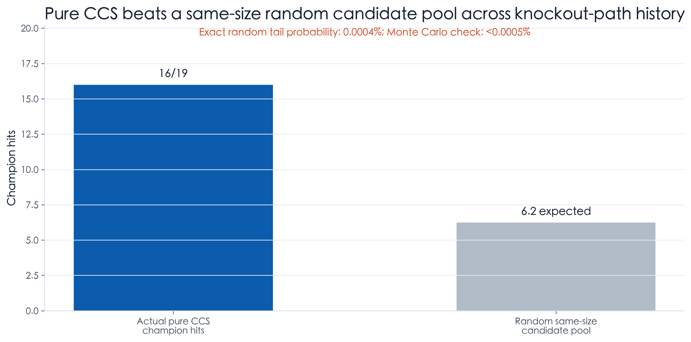
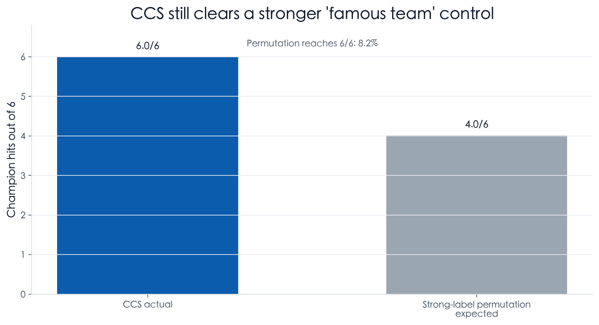
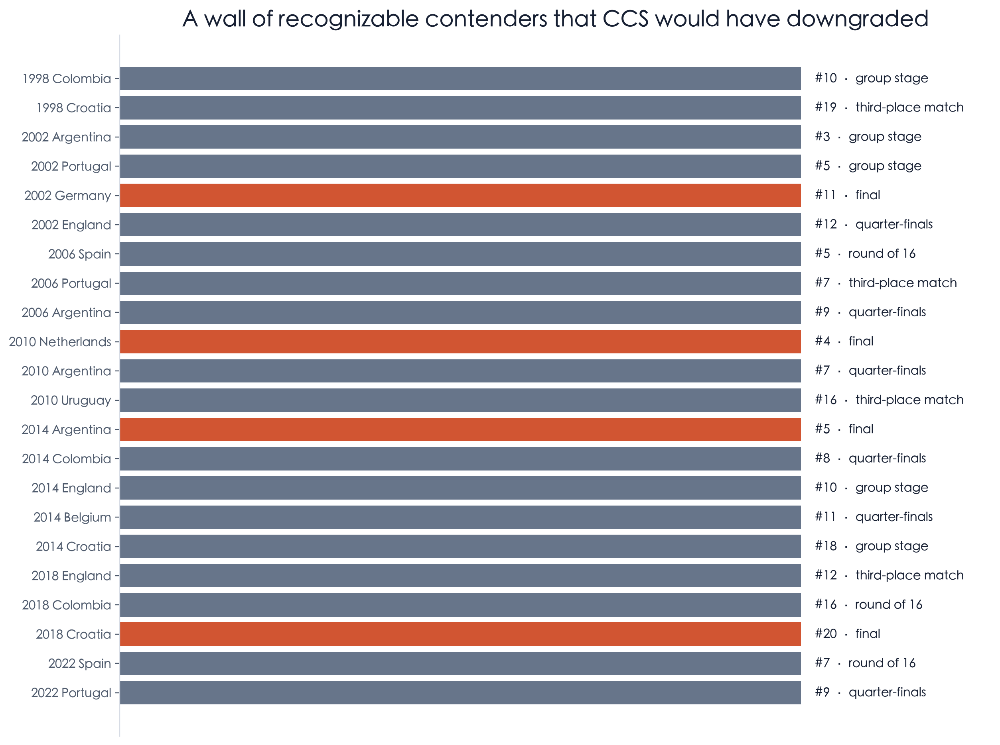
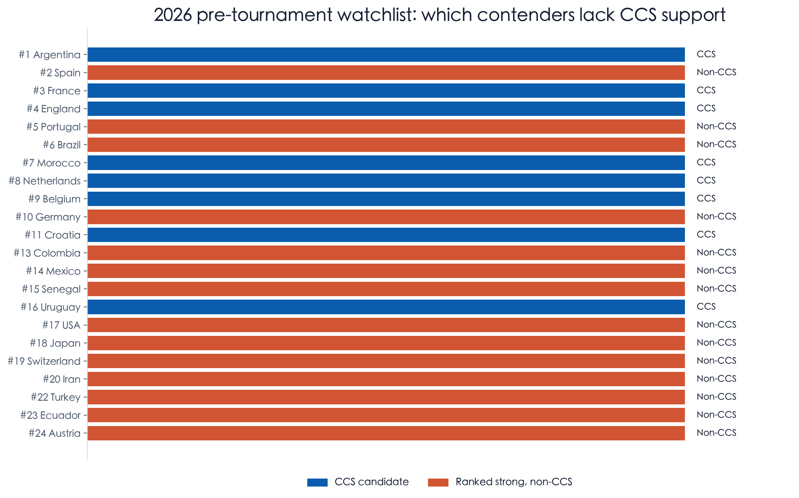
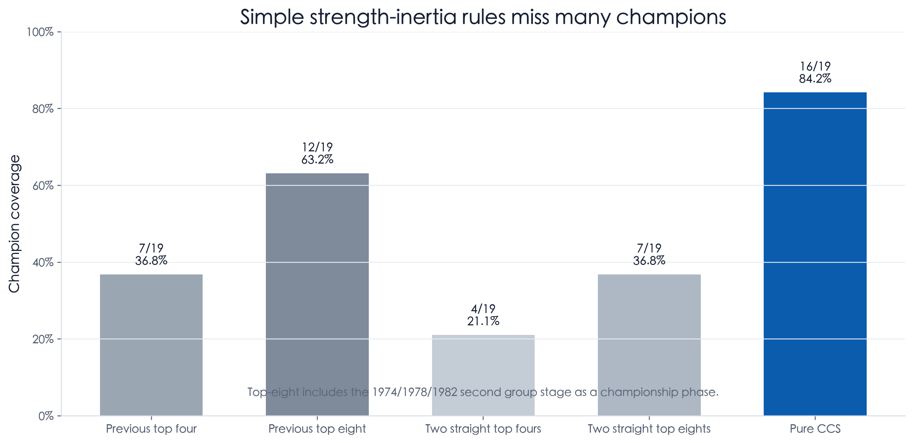

Champion-chain signal: a pre-tournament filter for real title contenders
A reproducible backtest with two lenses: pure CCS as a broad champion-chain candidate pool, and a stricter prior-two-participation exclusion rule for teams with no champion/runner-up path contact.
Executive Summary
- The report now carries two explicit lenses. Lens A is pure CCS: no prior-participation filter, just whether a team is in the prior two champion-chain pools. Lens B adds the stricter question: among teams that played both prior World Cups, did any clean non-contact team ever win next?
- Pure CCS is the broad candidate-pool claim. Across the full knockout-path history, pure CCS covers 16/19 evaluable champions; a same-size random candidate pool would expect 6.2 hits and reach that result with probability 0.0004%.
- The pool is not trivially huge. Pure CCS averages 7.5 candidates per historical tournament, covering 32.8% of all teams and 45.7% of knockout/championship-phase teams by simple yearly average.
- The prior-two-participation lens is the sharper exclusion claim. From 1938 to 2022, 177 team-tournaments played both prior World Cups; 112 had champion/runner-up path contact, while 65 had none. That clean non-contact bucket produced 0 next champions.
- This reframes the historical “misses.” Argentina 1978 and France 1998 are not counterexamples because they did not play both prior World Cups. Italy 1982 is not a counterexample because it played both, and in 1978 it lost to runner-up Netherlands in the second group stage.
- The random benchmark is just probability multiplication, and that is the right first test. If each year randomly excluded the same number of teams as the clean non-contact bucket, the expected number of excluded champions is 2.6; the exact probability of excluding zero champions is 5.9%.
- The Monte Carlo simulation is a sanity check, not a black box. A 200,000-run random redraw gives 5.9%, close to the exact probability. The report uses the exact value as the headline and keeps simulation as a reproducibility check.
- The most useful reader experience is the pre-tournament downgrade list. From 1998 onward, a long list of recognizable contenders were highly ranked but non-CCS at kickoff. Many still advanced, including finalists, but none won in the modern sample.
- The report now controls for simple strength inertia. Previous top-eight status covers 12/19 historical champions, while two straight top-eight finishes cover only 7/19. Pure CCS covers 16/19 on the same historical denominator.
- The mechanism is partly strength, but more specific than strength. The rule asks a narrower question than ranking: did this team recently prove it could survive, win, or be eliminated by finalist-level opposition in the World Cup cycle?
1. Two lenses, two uses
No requirement that a team played both prior tournaments. This is the broader candidate-pool lens: did the next champion appear in either of the previous two champion-chain sets?
Only teams that played both prior World Cups enter the stricter denominator. If they still had no champion/runner-up path contact, the historical winner count is zero.
These lenses answer different questions. Pure CCS is better for building a candidate pool. The prior-two-participation rule is better for explaining why certain apparently strong teams should be downgraded before kickoff.
2. Scope and pool size: CCS is not a majority-of-field shortcut
The historical scope is 19 evaluable target tournaments from 1938 to 2022. The lookback window uses the two most recent World Cups with a knockout or championship-phase path; 1950 is excluded as a source tournament because it had no knockout path, while 1974, 1978, and 1982 treat the second group stage as a championship phase.
The pure CCS pool is large enough to be useful, but not so large that the result is automatic. Across the historical sample, pure CCS averages 7.5 candidates per tournament. It covers 32.8% of all participants by simple yearly average (31.8% weighted by team-tournaments).
Within the business end of the tournament, CCS still does not cover everyone. It covers 45.7% of knockout/championship-phase teams by simple yearly average (43.6% weighted). In the modern 1986-2022 sample, CCS covers 29.8% of all teams, 41.2% of round-of-16 teams, and 52.5% of quarter-finalists.
3. Lens A: pure CCS, without the prior-participation filter
Pure CCS asks the broad question first. Ignore whether the team played both previous World Cups. If it is in the champion-chain set from either of the prior two knockout-path tournaments, it is a CCS candidate. On the full historical knockout-path sample, this covers 16/19 evaluable champions.

Modern standard-format evidence points in the same direction. From 1986 to 2022, CCS covers 9/10 (90.0%) champions overall, or 9/9 (100.0%) after treating France 1998 as a no-prior-history exception.

4. Lens B: the strict exclusion rule has produced zero champions
The rule is intentionally narrow. A team is put in the exclusion bucket only when it played both prior World Cups and, across all knockout or championship-phase appearances in those two tournaments, it neither won the tournament nor lost to that tournament's champion or runner-up. In 1974, 1978, and 1982, the second group stage is treated as a championship phase because those formats did not use a modern round-of-16 bracket.
The prior-two-participation gate is deliberately strict, so the right comparison is inside that same gate. Across the 1938-2022 target sample, there are 460 team-tournaments. Only 177 played both prior World Cups; among those, 112 had champion/runner-up path contact and 65 did not.
The 65 count is team-tournaments, not unique teams. It is the clean side of a 112 vs 65 split among teams that passed the strict prior-participation gate, not a hand-picked list of isolated cases. If counted more literally, 99 of the 177 lost to a champion or runner-up in the prior two tournaments; 31 had their own prior title; 18 had both, so the union is 112.

The apparent exceptions disappear under this stricter definition. Argentina 1978 did not play the 1970 finals. France 1998 did not play either 1990 or 1994. Italy 1982 did play both prior tournaments, but in 1978 it lost to the eventual runner-up, the Netherlands, during the second group stage.
| Year | Champion | Prior two World Cups | Status | Evidence |
|---|---|---|---|---|
| 1978 | Argentina | 1970;1974 | Not covered by exclusion rule: did not play both prior finals | No path contact, but did not play both prior finals |
| 1982 | Italy | 1974;1978 | Played both prior finals and had champion/runner-up path contact | 1978: lost to Netherlands (runner-up) in second group stage |
| 1998 | France | 1990;1994 | Not covered by exclusion rule: did not play both prior finals | No path contact, but did not play both prior finals |
| 2022 | Argentina | 2014;2018 | Played both prior finals and had champion/runner-up path contact | 2014: lost to Germany (champion) in final | 2018: lost to France (champion) in round of 16 |
5. Two simulations: pure candidate-pool hit and strict exclusion miss
Both benchmarks use the same philosophy: preserve each year's pool size, randomize the labels, then compare the observed result. For pure CCS, the event is “random candidate pool hits at least as many champions as CCS.” For the strict lens, the event is “random exclusion pool avoids every champion.”
The pure CCS random benchmark is a hit-rate test. Same-size random pools would expect 6.2 champion hits across the full historical knockout-path sample; reaching 16/19 has exact probability 0.0004% and Monte Carlo probability <0.0005%.
The strict exclusion benchmark is an exclusion test. The script redraws same-size random exclusion pools 200,000 times. The simulated probability of excluding zero champions is 5.9%, while the exact probability is 5.9%.

The stronger control asks whether CCS is merely a famous-team label. This simulation is intentionally limited to 1998-2022, where the report has a consistent pre-tournament FIFA ranking layer and a defensible modern title-contender set. For each tournament, we preserve the number of CCS labels inside the traditional title-contender set and outside it, then randomly permute the labels inside those two groups. Excluding the explicit France 1998 no-prior-history exception, CCS hit 6/6 evaluable champions; the strong-label permutation expects 4.0/6, and reaches 6/6 with probability 8.2%.

6. The pre-tournament experience: recognizable favorites CCS would downgrade
This is the most intuitive way to use the method. Before kickoff, a team can be highly ranked, historically recognizable, and still lack a recent champion-chain connection. The main exhibit is curated from a Top-20 non-CCS audit pool to show the teams a modern audience would naturally treat as title-relevant: Argentina, Germany, England, Spain, Portugal, Netherlands, Belgium, Colombia, Croatia, and Uruguay.

| Year | Team | Code | FIFA rank | Final outcome | Ranking date |
|---|---|---|---|---|---|
| 1998 | Colombia | COL | #10 | group stage | 1998-05-20 |
| 1998 | Croatia | HRV | #19 | third-place match | 1998-05-20 |
| 2002 | Argentina | ARG | #3 | group stage | 2002-05-15 |
| 2002 | Portugal | PRT | #5 | group stage | 2002-05-15 |
| 2002 | Germany | DEU | #11 | final | 2002-05-15 |
| 2002 | England | ENG | #12 | quarter-finals | 2002-05-15 |
| 2006 | Spain | ESP | #5 | round of 16 | 2006-05-17 |
| 2006 | Portugal | PRT | #7 | third-place match | 2006-05-17 |
| 2006 | Argentina | ARG | #9 | quarter-finals | 2006-05-17 |
| 2010 | Netherlands | NLD | #4 | final | 2010-05-26 |
| 2010 | Argentina | ARG | #7 | quarter-finals | 2010-05-26 |
| 2010 | Uruguay | URY | #16 | third-place match | 2010-05-26 |
| 2014 | Argentina | ARG | #5 | final | 2014-06-05 |
| 2014 | Colombia | COL | #8 | quarter-finals | 2014-06-05 |
| 2014 | England | ENG | #10 | group stage | 2014-06-05 |
| 2014 | Belgium | BEL | #11 | quarter-finals | 2014-06-05 |
| 2014 | Croatia | HRV | #18 | group stage | 2014-06-05 |
| 2018 | England | ENG | #12 | third-place match | 2018-06-07 |
| 2018 | Colombia | COL | #16 | round of 16 | 2018-06-07 |
| 2018 | Croatia | HRV | #20 | final | 2018-06-07 |
| 2022 | Spain | ESP | #7 | round of 16 | 2022-10-06 |
| 2022 | Portugal | PRT | #9 | quarter-finals | 2022-10-06 |
The pattern is useful but not absolute. Non-CCS strong teams can go deep: 2002 Germany, 2010 Netherlands, and 2014 Argentina reached finals. The historical point is narrower and stronger: in the modern sample, the champion almost always came from the CCS side of the field.
7. 2026 application: separate rank strength from champion-chain strength
The 2026 view is a live-use case, not a backtest result. The ranking snapshot is frozen at FIFA's June 11, 2026 official ranking and the qualified-team list is from FIFA's 2026 season endpoint. The headline application is clear: Spain, Portugal, Brazil, Germany, and Colombia are rank-strong, reputation-strong, but non-CCS before kickoff.
| fifa_rank | Team | Code | FIFA points | Downgrade reason |
|---|---|---|---|---|
| #2 | Spain | ESP | 1874.71 | Rank/reputation strong, but no CCS source from 2018/2022 |
| #5 | Portugal | POR | 1767.85 | Rank/reputation strong, but no CCS source from 2018/2022 |
| #6 | Brazil | BRA | 1765.86 | Rank/reputation strong, but no CCS source from 2018/2022 |
| #10 | Germany | GER | 1735.77 | Rank/reputation strong, but no CCS source from 2018/2022 |
| #13 | Colombia | COL | 1698.35 | Rank/reputation strong, but no CCS source from 2018/2022 |
The broader watchlist below keeps the full top-ranked context visible, so the downgrade call is not hidden inside a hand-picked list.

| fifa_rank | Team | Code | CCS status | CCS source World Cup |
|---|---|---|---|---|
| #1 | Argentina | ARG | CCS candidate | 2018;2022 |
| #2 | Spain | ESP | Non-CCS downgrade | none |
| #3 | France | FRA | CCS candidate | 2018;2022 |
| #4 | England | ENG | CCS candidate | 2018;2022 |
| #5 | Portugal | POR | Non-CCS downgrade | none |
| #6 | Brazil | BRA | Non-CCS downgrade | none |
| #7 | Morocco | MAR | CCS candidate | 2022 |
| #8 | Netherlands | NED | CCS candidate | 2022 |
| #9 | Belgium | BEL | CCS candidate | 2018 |
| #10 | Germany | GER | Non-CCS downgrade | none |
| #11 | Croatia | CRO | CCS candidate | 2018;2022 |
| #13 | Colombia | COL | Non-CCS downgrade | none |
| #14 | Mexico | MEX | Non-CCS downgrade | none |
| #15 | Senegal | SEN | Non-CCS downgrade | none |
| #16 | Uruguay | URU | CCS candidate | 2018 |
8. Strength-inertia baselines: top-four and top-eight history is not enough
This is the cleanest answer to the “is CCS just picking historically strong teams?” objection. Simple prior-performance rules do contain information: previous top-eight teams are better than random. But they do not cover champions nearly as well as CCS, and the stricter consecutive-top-eight rule becomes too narrow.

| Signal | Champion coverage | Avg candidate pool | Candidate-slot precision | Same-size random tail |
|---|---|---|---|---|
| Previous top four | 7/19 (36.8%) | 3.2 | 11.5% | 1.41% |
| Previous top eight | 12/19 (63.2%) | 6.2 | 10.2% | 0.12% |
| Two straight top fours | 4/19 (21.1%) | 0.9 | 22.2% | 0.76% |
| Two straight top eights | 7/19 (36.8%) | 2.9 | 12.7% | 0.67% |
| Pure CCS | 16/19 (84.2%) | 7.5 | 11.3% | 0.0004% |
The miss list is the point. Previous top-eight history misses France 1998, Italy 2006, Spain 2010, and Argentina 2022; two straight top-eight history also misses France 2018. CCS is not merely copying the previous bracket. It captures a wider champion-chain relationship.
9. Why this happens: strength matters, but path matters too
CCS partly captures strength, and that should be acknowledged. Champions, finalists, and teams beaten by finalists are usually strong teams. A signal built from those events will naturally overlap with FIFA ranking, odds, and historical reputation.
But CCS is not simply 'teams that often qualify' or 'teams that are highly ranked.' It requires a specific recent relationship to the champion path: either winning the World Cup or being knocked out by a finalist. A team can be ranked highly, qualify regularly, or have reached a quarter-final and still be non-CCS if it did not touch that path.
The proposed mechanism is tournament-cycle validation. Recent champion-chain contact is a proxy for having already met World Cup knockout intensity against finalist-level opposition. It is not causal proof; it is a compact historical state variable that seems especially relevant for champions rather than finalists.
Recommended Next Steps
- Use CCS as the first-layer title filter. Start the champion pool with CCS candidates, then require extra evidence to re-admit non-CCS teams.
- Add a stronger model benchmark. Compare CCS against Elo, odds-implied probabilities, FIFA ranking, and a combined model to test incremental value.
- Track 2026 without moving the goalposts. Freeze the pre-tournament CCS/ranking table and evaluate it only after the tournament is complete.
Caveats And Assumptions
- The headline exclusion test uses team-tournaments, not unique national teams. A country can appear multiple times if it satisfies the rule in multiple World Cup cycles.
- 1950 remains in the target-year audit because the rule evaluates whether the next champion had prior-two-World-Cup path contact; the target tournament itself does not need a knockout bracket for that question.
- For 1974, 1978, and 1982, second group stage matches are treated as championship-phase matches because those tournaments used hybrid formats rather than a modern bracket.
- The random benchmark is an exact same-size random exclusion calculation. The Monte Carlo simulation is only a reproducibility check of that arithmetic.
- The strong-team permutation simulation remains a modern 1998-2022 control, not a full-history simulation, because it depends on consistent modern ranking context and curated title-contender labels.
- Strength-inertia baselines are now included for previous top four, previous top eight, two straight top fours, and two straight top eights. They are useful controls but not replacements for CCS.
- FIFA ranking is used lightly as a public audit proxy; odds and Elo would be better next-step baselines.
- Elo and betting-odds controls require external historical datasets that are not part of this reproducible repo snapshot; they are kept as next-version model benchmarks rather than open items inside this report.
- 2026 outcomes are not used in the 2026 watchlist. The ranking date is frozen at June 11, 2026.